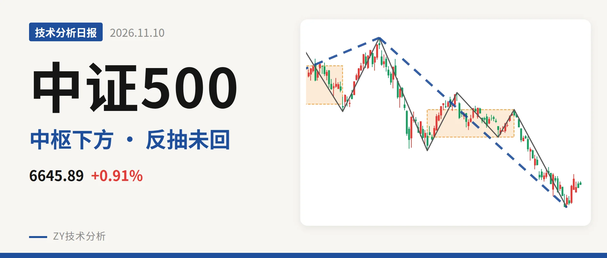

中证500｜反抽未回7451点，日线三卖压

最近日线中枢 7451.12—7922.62点，收盘位于中枢之下
一句话：日线反抽受7451点中枢下沿压制，结构仍偏弱。
🧭 走势结构：日线下跌段延续，反抽尚未成笔
当前日线仍处于7月1日以来的下跌段中，该下跌线段没有结束。7月1日至11月2日的日线下跌线段内含5笔，最后的下行笔9月22日至11月2日已经结束，低点6253.79点。11月3日之后仅6根K线，最高6819.12点，未构成新的一笔，先看作下跌段内的反抽。更大级别走势上，2024年2月5日至2026年7月1日的上涨段与7月1日以来的下跌段都还在延续，当下没有回到上涨结构；不过最新价仍站在2022年4月27日至2023年8月4日线段中枢上沿6263.16点上方。

📍 中枢与位置：跌破最近中枢，反抽距下沿尚远
最新收盘6645.89点位于7月30日至9月22日的日线中枢下方，该中枢区间7451.12—7922.62点，低于下沿约10.8%。中枢由1月26日至6月8日的8014.66—8671.35点下移至7月30日至9月22日的7451.12—7922.62点，中枢下移。11月3日以来反弹最高6819.12点，没有进入中枢。11月2日低点6253.79点略破上述线段中枢上沿6263.16点，但收盘仍在6263点上方，更大级别尚未有效跌回中枢内部。
🔻 买卖点：一买后反抽未回中枢下沿，三卖待成立
11月2日一买是日线笔级别，落在9月22日至11月2日下跌笔末端，该笔已经结束。其后的回升最高到6819.12点，没有回到最近中枢下沿7451点。卖点方面，8月18日二卖8211.31点、9月22日类二三卖7922.62点，一个比一个低，反弹高点6819.12点也低于这些卖点。若反抽不能回到7451点上方，结构上会对该中枢构成三卖；目前反弹还未成笔，三卖也还没有成立。

📉 背驰：下跌力度减速，但非标准底背驰
9月22日至11月2日这轮下跌只出现力度减速，不是标准底背驰。对比7月1日至7月30日下跌笔，价格低点由7221.95点下移至6253.79点，绿柱面积由2687缩至1782，但DIF低点由-285.2下移至-295.6。面积未随新低放大，说明下跌动能在减弱；DIF低点仍下移，因此没有形成标准的“新低不新弱”。11月2日一买缺少标准底背驰支撑，更多是下跌力度收缩后的反弹结构。最新DIF仍在零轴下方，值为-194.5，柱线88.8，反弹未能改变零轴下格局。
🔎 关键位置观察：7451点决定反抽性质
当前结构偏弱。上方压力看7451点附近，这是最近中枢下沿；反抽若回不到7451点上方，构成日线三卖，7月1日以来的下跌段还会延续。重新站上7451点并回到中轴7687点附近，下跌更可能只是中枢扩展。下方看6254点一线，即11月2日一买位置，若跌破该位置，一买被破坏，低点需重新构筑。在未形成三卖之前，反抽仍有反复余地，但整体结构弱于中枢震荡。
⚠️ 本文为基于公开行情数据的缠论技术结构记录，由程序自动计算并生成，仅供学习交流，不构成任何投资建议。市场有风险，投资需谨慎。